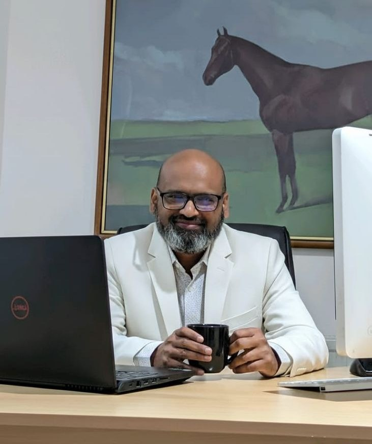

Not an engineer who became an AI consultant — a business leader whose engineering foundation shapes how he diagnoses problems and builds solutions.
Syed Islam is a Senior Management Consultant specialising in Strategy, Business Transformation and AI & Technology, with more than 18 years of cross-sector experience spanning engineering, operations, manufacturing, international trade and venture building.
He holds an MBA in Project Management (Distinction) and a BSc in Electrical & Electronic Engineering — a combination that shapes how he approaches every engagement, with the analytical rigour of an engineer and the commercial judgement of a business leader. Early in his career, this meant solving practical engineering and operational problems, from circuit design and industrial equipment restoration to hardware contributions on major infrastructure projects. Over time, his focus shifted toward business leadership, international commercial activity and venture building.
Syed currently serves as Principal AI Consultant at Ascentra Global Ltd, where he leads research and development of AI-driven business automation solutions and manages global partnerships across strategic and technical projects. Alongside this, he is the founder of Britsync UK Ltd, where he has built and directed a portfolio of AI products, technology platforms and talent initiatives — including ventures in cybersecurity, education and international talent deployment.
This combination of engineering discipline, senior AI leadership and hands-on venture building gives Syed a distinctive vantage point: he understands both the strategic priorities of the boardroom and the operational realities of building and deploying technology. He now applies this experience to help CEOs and senior leadership teams navigate strategy, business transformation and the adoption of AI.

I'm not an AI salesperson. I'm a senior management consultant who understands business, operations, technology and AI — and I help leadership teams work out what needs to change, and how to execute that change.
— Syed IslamI can operate between executive leadership and technical teams — translating board-level strategy into technical direction, and technical realities into business decisions.
My background is in moving from ideas and strategy toward actual implementation — not just producing recommendations that sit on a shelf.
My experience spans engineering, operations, international business, entrepreneurship and technology, giving me a broad frame of reference for diagnosing business problems.
I focus on practical business value rather than adopting AI because it is fashionable. The question is always whether it creates measurable value.
I've built businesses, platforms and technology initiatives myself, which gives me practical exposure to what execution actually requires.
This is designed as a senior leadership engagement — working with CEOs, MDs and boards on strategic decisions, not individual technical tasks.
If you are considering a major change in strategy, operations, technology or AI adoption, let's have a confidential conversation about the challenge.